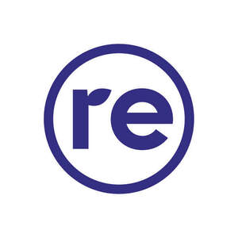

Trade Mark Journal No.2026/008 20 February 2026
UK00004339260 11 February 2026 (7,8,9,11,12,21,25,28,35,36,37,38,39,42)

- Class 7
- Laundry washing machines; Dishwashers; Robots for cleaning; Sweeping, cleaning, washing and laundering machines; Electric kitchen tools; Power tools; Vacuum cleaners; Electric blenders; Electric food processors.
- Class 8
- Hand tools, hand-operated.
- Class 9
- Weighing apparatus and instruments; Measuring apparatus; Electrical and electronic apparatus for processing data; Data processing equipment; Computers and computer hardware; Amplifiers; Hi-fi sound systems; Apparatus and instruments for recording sound; Apparatus and instruments for processing sound; Video cameras; Cameras; Printers; Projectors; Hard drives; Solid-state drive [SSD]; Laptop computers; Monitors; Scanners; Mobile phones; Chargers for mobile phones; Smartwatches; Navigation apparatus and instruments; Multimedia devices; Data storage media; USB flash drives; Speakers; Microphones; Telephone headsets; Audiovisual headsets for playing video games; Computer peripheral devices; Computer keyboards; Computer mice; Battery chargers; Batteries; Protective cases for mobile phones; Laptop cases; Cases for tablet computers; Mobile phone screen protectors; Software; Computer software; Smartphones.
- Class 11
- Water coolers and heaters; Refrigerators; Freezers; Cooking stoves; Cooking appliances; Cooking apparatus; Microwave ovens; Ovens; Apparatus for ventilating; Cooling apparatus; Air purifiers; Humidifiers.
- Class 12
- Vehicles; Bicycles; Electrically powered scooters; Electric bicycles.
- Class 21
- Household or kitchen utensils; Toilet and bathroom cleaning utensils .
- Class 25
- Clothing; Sportswear; Footwear; Headgear.
- Class 28
- Video game consoles; Toys; Games; Gymnastic and sporting articles; Sporting articles; Sports equipment.
- Class 35
- Advertising; Online advertising on a computer network; Online advertising; Provision of an online marketplace for buyers and sellers of goods and services; Presentation of goods on communication media, for retail purposes; Arranging commercial transactions, for others, via online shops; Advertising services relating to the sale of goods; Market analysis services relating to the sale of goods; Commercial information services, via the internet; Retail services for computer software; Providing a searchable online advertising guide featuring the goods and services of other on-line vendors on the internet; Business intermediary services.
- Class 36
- Financial and monetary transaction services; Insurance brokerage.
- Class 37
- Maintenance and repair of electronic equipment; Computer hardware (Installation, maintenance and repair of -); Computer repair services; Computer maintenance services; Repair and maintenance of smartphones; Installation of computers.
- Class 38
- Telecommunication services; Providing access to e-commerce platforms on the Internet.
- Class 39
- Shipping of goods; Delivery of goods; Arranging the shipping of goods; Packaging of goods; Storage services; Warehousing.
- Class 42
- Design and development of computer software; Software as a service [SaaS]; Platform as a Service [PaaS]; Hosting platforms on the Internet; Providing search engines for the internet.
Refurbed Marketplace GmbH
Representative: Jonathan Binder